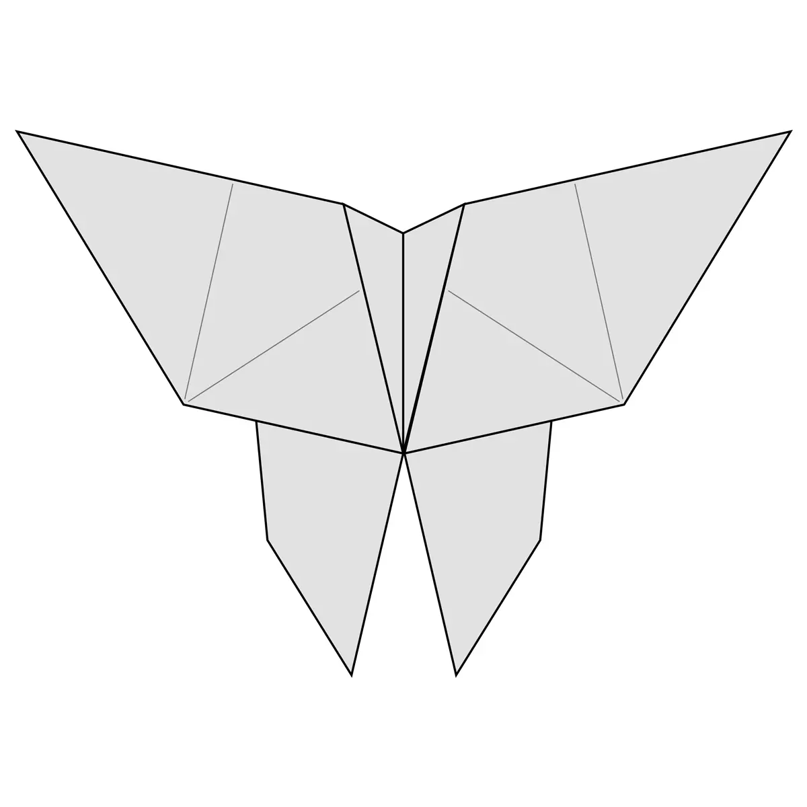

Chameleon
- Chameleons are reptiles that are part of the iguana suborder.
- Changing skin color is an important part of communication among chameleons.
- Most chameleons have a prehensile tail that they use to wrap around tree branches.

Camel
- Camel ears are furry.
- Camel can move easily across the land because of its specially designed feet.
- When they find water ,they will drink as much as possible.

Butterfly
- Butterflies have transparent wings.
- There are about 20,000 species of butterflies.
- Butterflies taste with their feet.

Pegions
- Pigeons are incredibly complex and intelligent animals.
- Pigeons are renowned for their outstanding navigational abilities.
- Pigeons are highly sociable animals.

Panda
- They have great camouflage for their environment.
- Their eyes are different to normal bears.
- Cubs are well protected in their first month.

Lion
- Nearly all wild lions live in Africa, but one small population exists elsewhere.
- Males' magnificent manes tell a story.
- Lions can get their water from plants.

Giraffe
- Giraffes are the tallest mammals on Earth.
- They can run as fast as 35 miles an hour over short distances, or cruise at 10 mph over longer
distances.
- A giraffe's neck is too short to reach the ground.

Cat
- Cats spend 70% of their lives sleeping.
- The oldest known pet cat existed 9,500 years ago.
- The record for the longest cat ever is 48.5 inches.